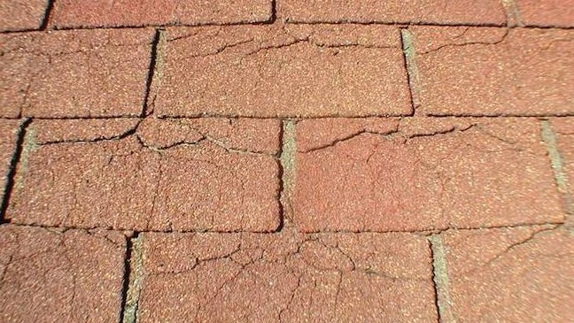

Average Lifespan of a Shingle Roof in Austin
Homeowners across Austin and Central Texas often ask the same question: “How long should my shingle roof last?” The answer depends on several factors, including material type, installation quality, ventilation, maintenance, and—most importantly—the harsh Texas climate.
While manufacturers may advertise long warranty periods, real-world roof lifespan in Austin is often shorter due to intense heat, UV exposure, hailstorms, and sudden temperature swings.
Nationwide Average Roof Lifespan by Material
- 3-Tab Asphalt Shingles: 15–18 years
- Architectural (Dimensional) Shingles: 24–30 years
- Metal Roofing: 30–45 years
- Concrete Tile: 35–50 years
- Built-Up / Modified Bitumen: 10–16 years
- EPDM (Rubber Roofing): 10–16 years
In Central Texas, however, and most of the Southwest of the United States, asphalt shingles typically fall on the lower end of these ranges without proper ventilation and routine inspections. Typically, shingle roofs in Texas only last 12-15 years.
Why Asphalt Shingles Are Still the Most Popular Choice
Asphalt shingles remain the most common residential roofing material in Austin due to their affordability, availability, and ease of installation. Most homes throughout Travis County, Williamson County, and surrounding areas are protected by asphalt shingle systems.
Under ideal conditions, asphalt shingles can last anywhere from 20 to 30+ years. However, the extreme temperature variations, the harsh UV ray intensity, and the frequent wind and hail storm activity common to Central Texas often reduce asphalt shingle lifespan significantly.
Organic Asphalt Shingles
Organic shingles are manufactured using a felt-based mat saturated with asphalt and coated with ceramic granules. Because they contain more asphalt, they are heavier and more flexible.
While organic shingles can offer improved wind resistance, they tend to absorb more heat and moisture—making them less ideal for prolonged exposure to Austin’s extreme summer temperatures.
Fiberglass Asphalt Shingles
Fiberglass shingles use a reinforced fiberglass mat coated with asphalt and UV-protective granules. They are lighter, more fire-resistant, and more cost-effective than organic shingles.
Due to these benefits, fiberglass shingles are the most commonly installed roofing material by Austin roofing contractors today.
How Austin’s Climate Impacts Roof Lifespan
Roofing materials age faster in hot climates. In cooler northern states, shingles often last 20+ years. In Austin and Central Texas, that same roof may only last 12–15 years without proper ventilation and maintenance.
Temperature Extremes & Thermal Expansion
Austin roofs routinely experience daytime temperatures exceeding 100°F, followed by much cooler nights. These rapid temperature shifts cause shingles to expand and contract repeatedly.
Think of it like a pothole in an asphalt road. Potholes grow and expand over time due in large part to extreme temperature shifts. Asphalt shingles are no different.
Similar to potholes, large temperature swings lead to cracking, splitting, granule loss, and premature roof failure—especially on sun-facing roof slopes.

Additional Factors That Shorten Roof Life
- Low-quality roofing materials
- Poor attic ventilation
- Hail, high winds, and severe storms
- Dark-colored shingles absorbing excess heat
- Low roof slope causing water retention
- Sun-facing roof orientation
- Improper installation techniques
- Tree branches and leaf debris
In our experience at Verstera Roofing, improper ventilation is one of the biggest contributors to early roof failure in Austin homes.
Many homes in and around Austin do not have the required attic and roof ventilation needed to keep shingle roofs cool during the summer. Shingle roofs need to "breathe," requiring both adequate and equal inflow AND outflow of air. Often, shingle roofs in Central Texas do have adequate outflow vents installed at the top of the roof, but then do not have aqequate inflow vents (such as soffit in the eaves, box vents low on the roof, gable vents, etc).
Many times, we see the soffit inflow vents blocked by improperly installed insulation, rendering the vents useless. Without the ability to properly breathe, shingle roofs in Texas get fried from above from the sun, and then baked from below due to hot attics unable to expel air. We think that this ages asphalt shingle roofs faster than anything else.
For more information on proper roof ventilation, check out our blog post on the topic here
Maintenance, Inspections & Roofing Warranties
Regular roof inspections and preventative maintenance can dramatically extend the life of your roof. Catching small issues—like lifted shingles or flashing damage—early can prevent expensive repairs or premature replacement.
Manufacturer warranties typically range from 20 to 40 years, but warranties do not protect against poor installation, storm damage, or degredation due to age, temperature, and UV exposure. Always review warranty terms carefully, including ventilation requirements and transferability.